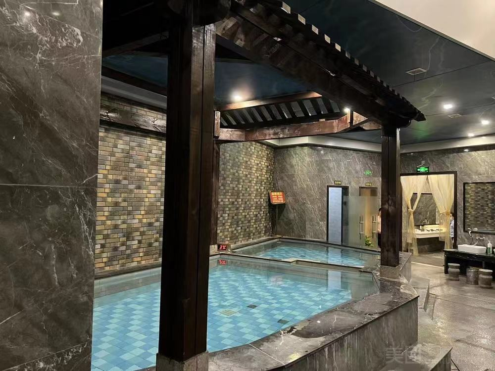
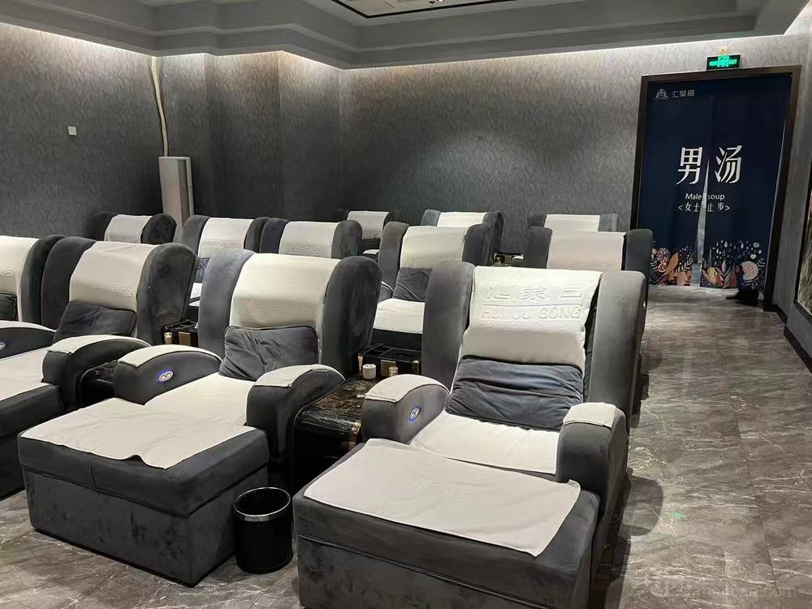
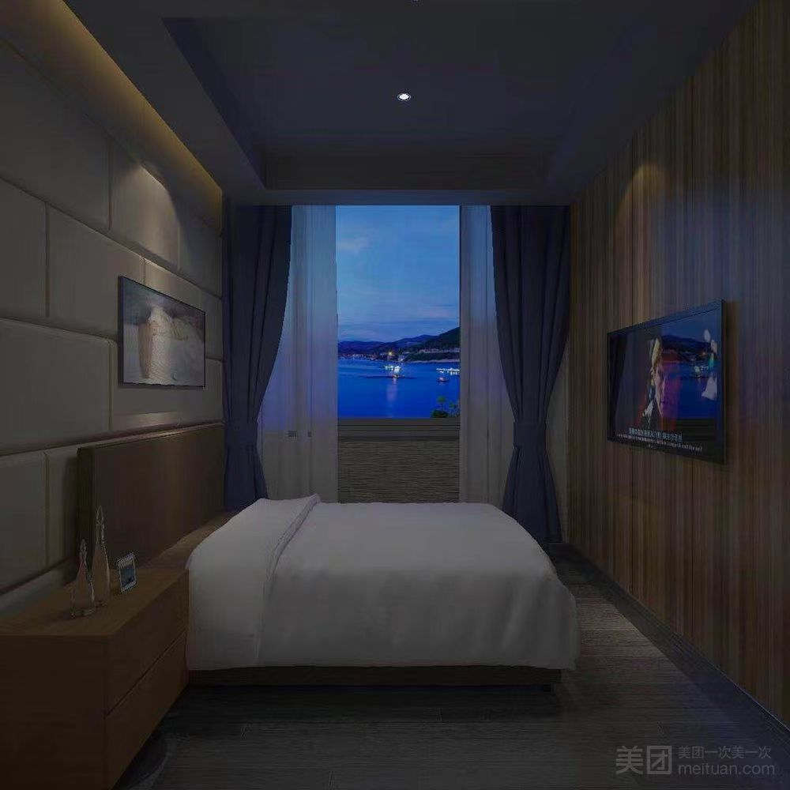
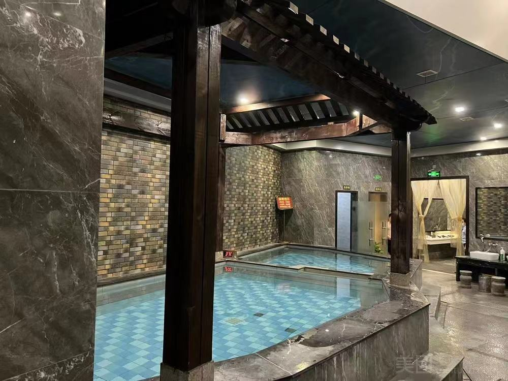
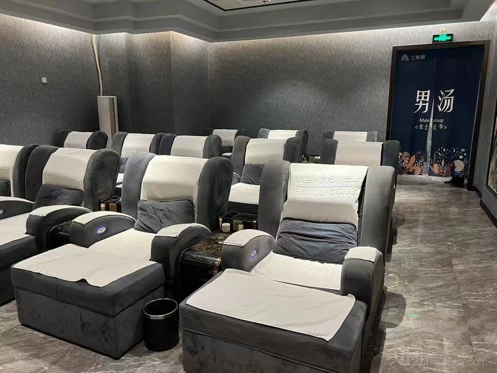
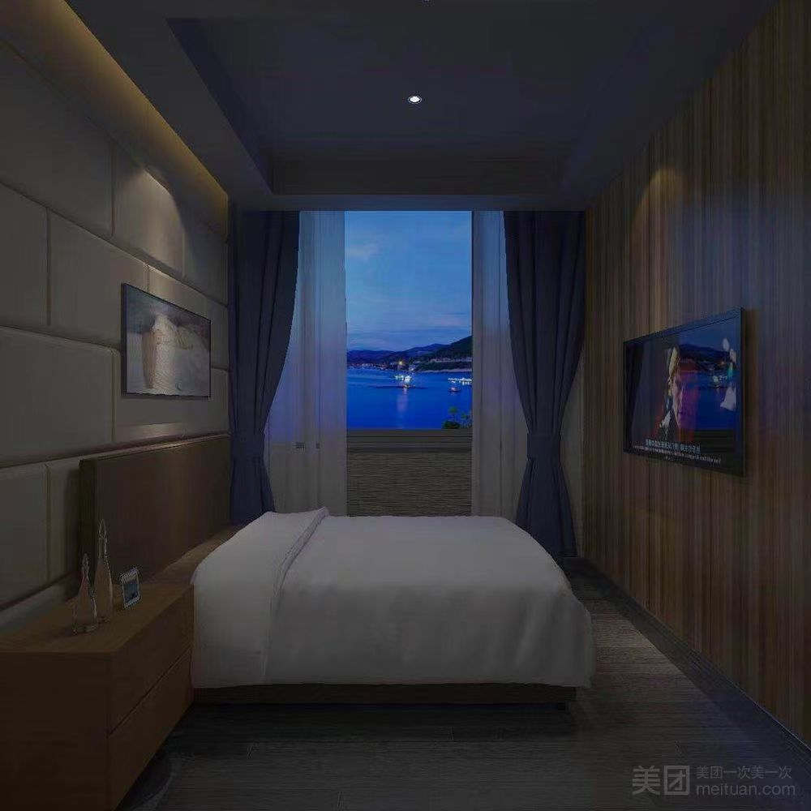
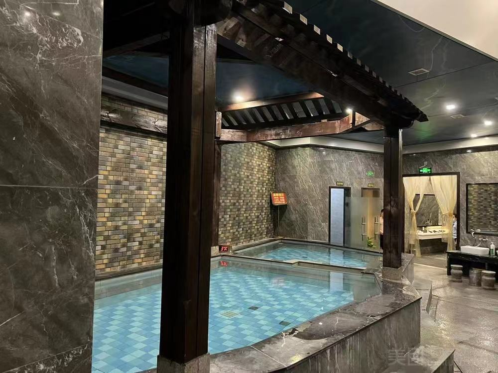
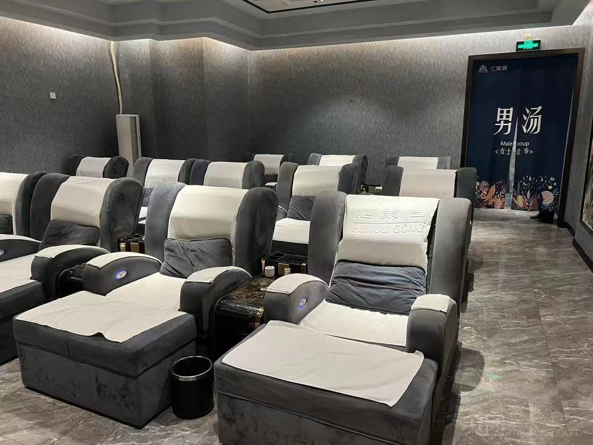
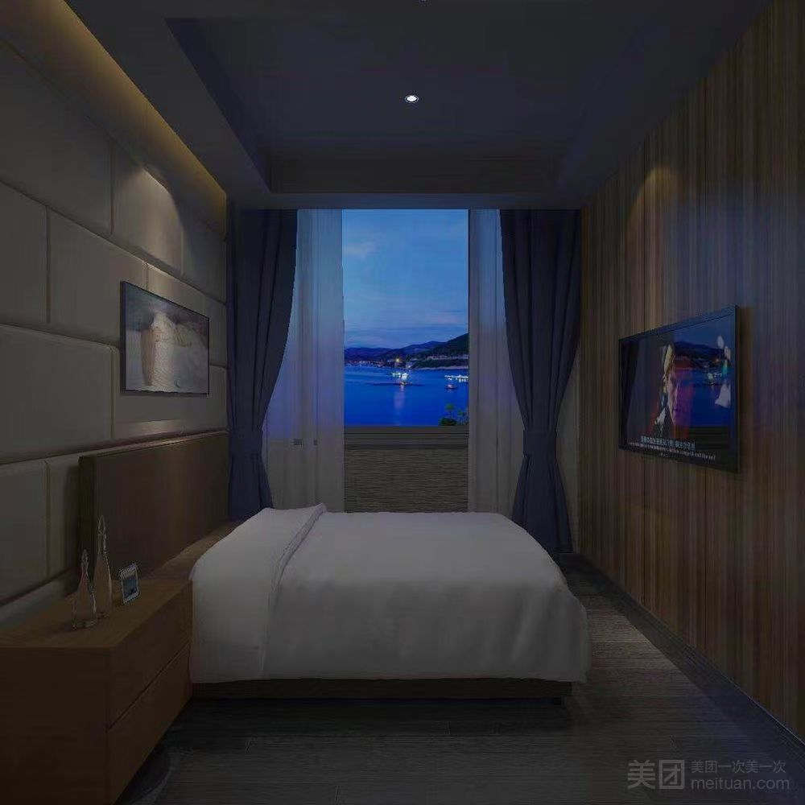
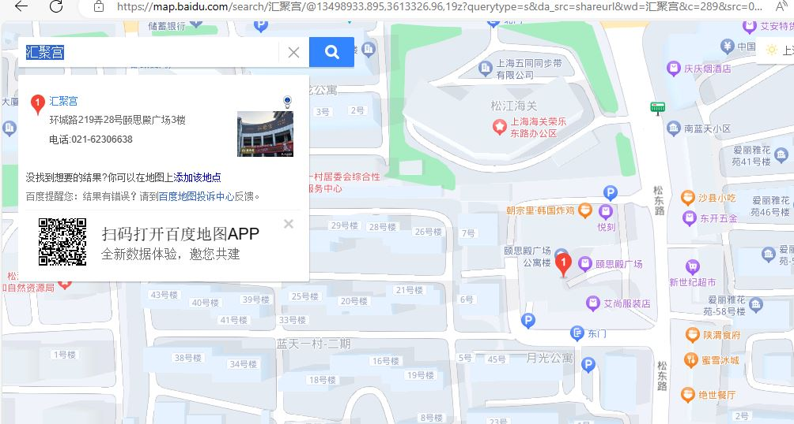

Hello Welcome to the website of What's worth visiting. This page introduces the places worth visiting in Songjiang, Shanghai.
The first item is to relax and take a bath in Songjiang
1. Huiju Palace

location: Please use China's Baidu Maps and enter ¾Û»ã¹¬ to search

Comments:: The service is very enthusiastic and the massage technique is very comfortable